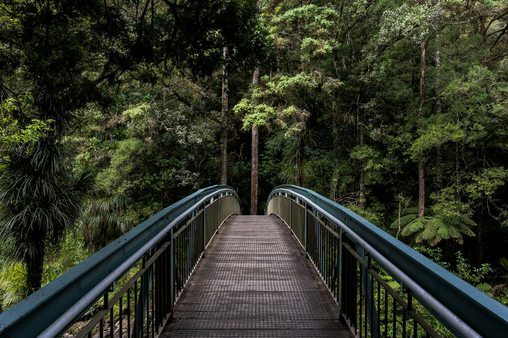

Spring ’95 — the Black Forest
Black Forest, Germany
Got properly lost on the first morning, which turned out to be the whole point. The light comes down through the pines in columns like something built rather than grown. Loaded the Rollei and just waited.
FILM LOG // Roll 03. Rolleiflex 2.8F. Portra 160, rated box speed.
Overcast then a 20-minute window of sun. Metered for the shadows and prayed.

followed this path till it forgot where it was going